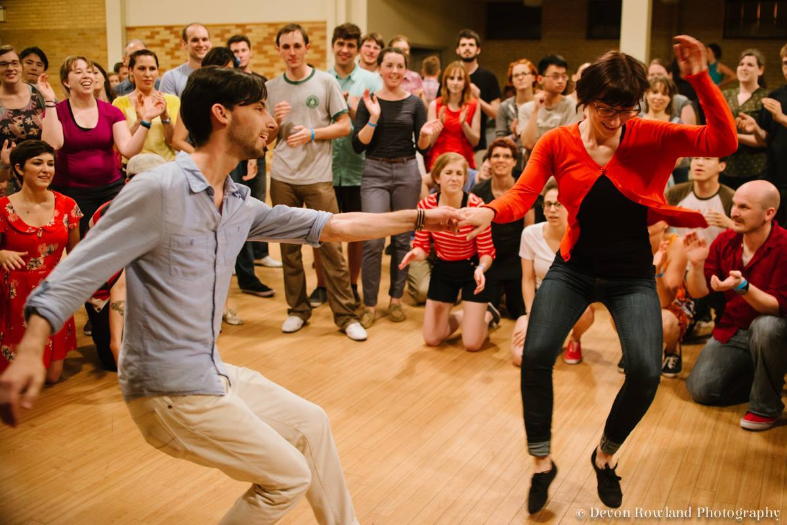
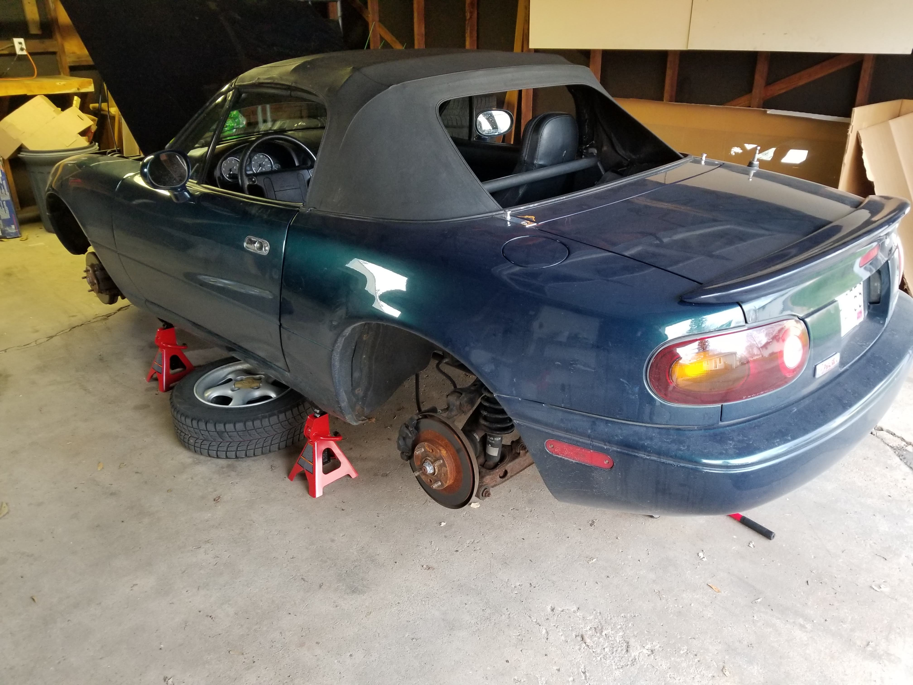
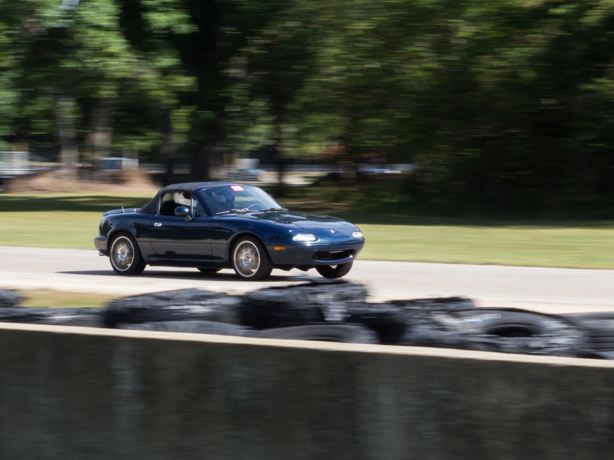
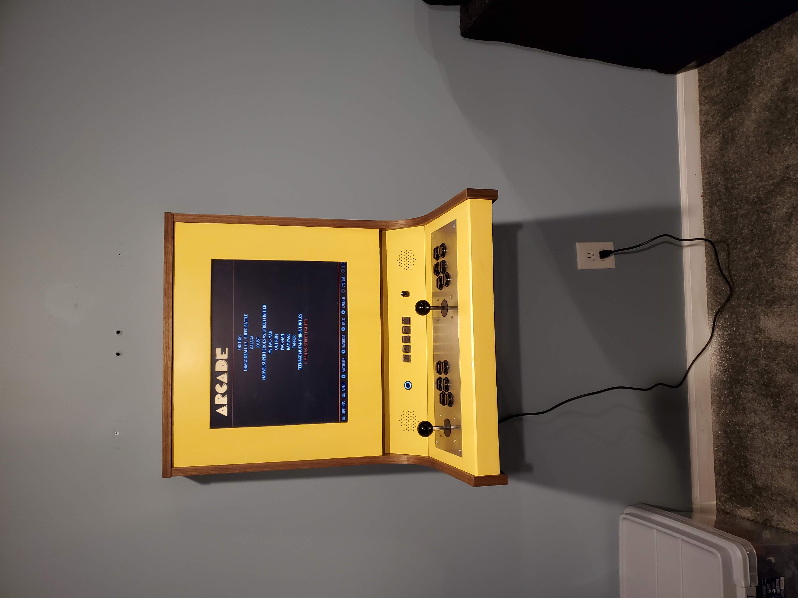
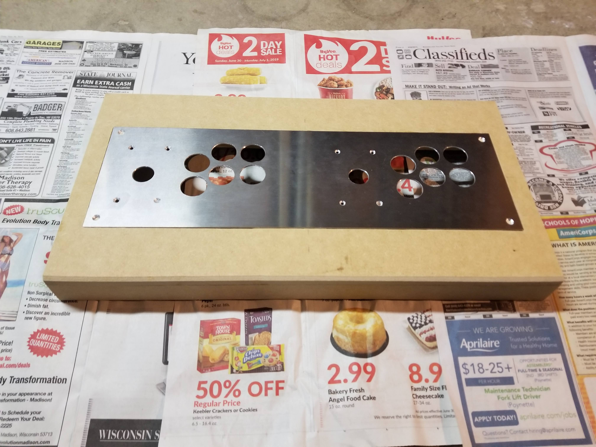
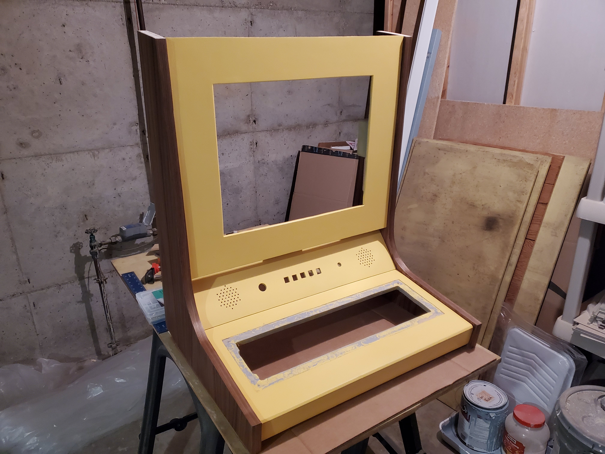
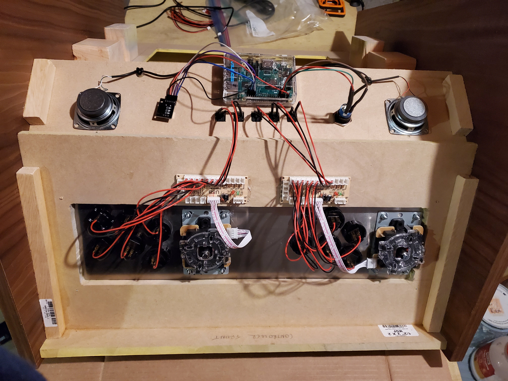

In my spare time, I enjoy quite a range of activities. First of all, I began dancing Lindy Hop in 2010 through the University of Rochester Swing Dance Club. Lindy Hop is a form of swing dancing originating and flourishing in the Savoy Ballroom in Harlem, New York in the late 1920s and 30s. I have been involved in local events and classes for many of those years including teaching in Madison, WI with Jumptown Swing. Additionally, in September 2019 I bought a 1995 Mazda Miata which I have been very much enjoying working on and driving around (in the few months of decent weather here in the midwest). And I just recently finished building an arcade machine based on a Raspberry PI.
ASTROPHYSICISTPHOTOGRAPHERDANCER
The Lindy Hop is a Black American dance originating in NYC during the Harlem Renaissance. It grew out of the swing and jazz music of the time and was based off of dances such as the Charleston, the breakaway, and the Texas Tommy. Today, you can find groups practicing and teaching the Lindy Hop in nearly every city in the US and widely throughout the rest of the world as well. I began dancing in 2010 in Rochester, NY with Groove Juice Swing. I have also been teaching classes since not long after that on topics such as musicality and rhythm, solo jazz, advanced technique, and classic moves. Here in Madison, WI I help organize events and teach with Jumptown Swing.

Recent projects on the Miata have included a full replacement of the brakes, fixing slow windows, replacing windshield washer sprayers and tubing, and fixing a leak in the power steering system. For the brakes, I replaced the rotors and pads which was relatively straight forward. However, I also wanted to replace the brake lines since they were probably 25 years old. Unfortunately, after doing all that and refilling the brake fluid I realized that the bleeder valves on the front calipers were rusted shut. So I replaced the front calipers as well! But now the brakes are feeling excellent and I know they'll be good for a long time yet. Next up were some small fixes including taking the door panels apart to clean and relube the window channels so that the windows could go up and down more quickly and easily. Then there was a break in the windshield washer fluid tubing so I took the liberty of replacing the spray nozzles when I patched up the tubing (the Ford 8L8Z-17603-AA worked great). My most recent project was fixing a leak in the power steering system. The leak was coming from the aluminum hose/pipe that runs the power steering fluid out in front of the radiator to cool it on its way back to the reservoir. While the part was not easy to extract and there were many rusted and broken bolts along the way, the replacement is in and working like a charm. In the fall of 2021, I was able to take it out to Blackhawk Farms Raceway for two track days and put it to the test. The car held up perfectly and I had an amazing time! Next up: some suspension modifications and back to the track next summer!


Throughout the pandemic, I have been building a wall-mounted arcade machine. I based my design off of the Love Hulten Origin X, but I mocked it all up from scratch in 3D CAD software. It is made of walnut plywood and MDF with an aluminum controller plate. It houses a Raspberry PI 2B running RetroPie with classic 6 button arcade controllers with 8-way joysticks as input. I also installed two external USB ports to plug in NES or SNES (or maybe N64) controllers as well. I wired up a power button and volume knob following the guide here. The additional five buttons in the center panel are wired up to the USB circuit board for the controllers to be start, select, and hotkey buttons. Finally, I used french cleat to stick it to the wall! So far, our favorite games have been Pac-Man, Tapper, Joust, and TMNT. But we've got a lot more to explore.


The controller panel with the aluminum inlay. The large holes were cut using a christmas tree bit and then the screw holes were countersunk as well.

All the woodworking pieces put together: the three center panels sandwiched between the walnut plywood edge pieces.

The underside of the controller panel showing the wiring between the buttons and the USB circuit board connected to the Raspberry PI. Additionally, you can see the speakers attached on either side and the wiring for the power button and volume knob.